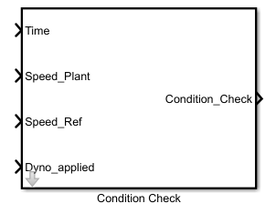

In order to keep check on failure condition,Time has to synchronise with real time simulation.Time is connected through clock as an input to the block
Condition check will begin only when the Dyno_applied signal is high.
If the difference in Speed_Plant and Speed_Ref is within the vicinity of tolerance band, output to stop simulation is logic 0.
If the difference is not within the tolerance and if speed continues to go out of limit for time greater than Parameter Time Check.
output to stop simulation is logic high.

This is an example carried for testing performance of sBPM motor, by varying parameter and thus varies corresponding temperature of stator and rotor.
This test is supported by two .m files, one for parameter initialization'Parameter_Initialization.m' and other one to run the script'Automatic_script_Temp.m'.
Test named 'Harness_Vary_Temp.slx' and can be found in the 'Sim_Arch\Harness' folder.